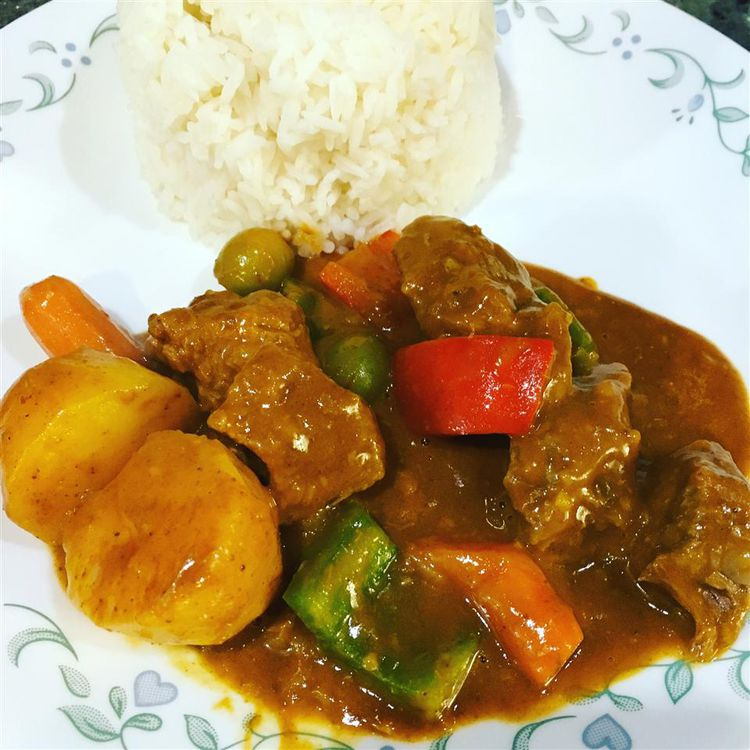

Back to Home
Caldereta

My Wife's Caldereta Recipe Is The Best I've Ever Tried:)
With meat cooked until so tender it falls off the bone, it’s no secret that beef caldereta is a Filipino favorite. A mix of ingredients come together in this tomato-based stew practically bursting with flavor. The beef caldereta recipe is one you’ll find in practically any Filipino cookbook—and most Filipino homes don’t even need one! This dish is one type of food you can enjoy whether in an intimate setting or with a larger crowd. No matter where or who you enjoy this dish with, I guarantee you won’t be able to get enough of this beef caldereta recipe!
Ingredients
- 4 lbs beef short ribs
- 1 Knorr Beef Cube
- 14 ounces tomato sauce
- 1 cup red wine
- 2 large potato cubed
- 1 large carrot cubed
- 1 cup manzanilla olives
- 2 bell pepper sliced
- 4 sprigs thyme
- 2 large onion chopped
- 1 head garlic chopped
- 3 tablespoons soy sauce
- ½ cup liver spread
- 1 cup water
- ¼ cup extra virgin olive oil
- Salt and ground black pepper to taste
Steps
- Heat oil in a pot. Fry the carrots for 2 minutes. Make sure that all sides are cooked equally. Remove from the pot. Set aside.
- Fry the potato until the color of the outer part turns light brown. Remove from the pot and set aside.
- Using the remaining oil, sauté garlic, onion, and thyme. Continue sautéing until the onion caramelizes.
- Add beef short ribs. Cook until the color of the outer part turns light brown.
- Pour tomato sauce and red wine. Add Knorr Beef Cube.
- Add soy sauce and water. Cover the pot. Continue cooking the stew in low heat setting until the beef tenderizes completely.
- Add liver spread and bell pepper. Cook for 3 minutes.
- Add carrot and potato. Cook for 3 minutes.
- Add cheddar cheese and then season with salt and ground black pepper.
- Transfer to a serving plate. Serve. Share and enjoy!
Go to Top